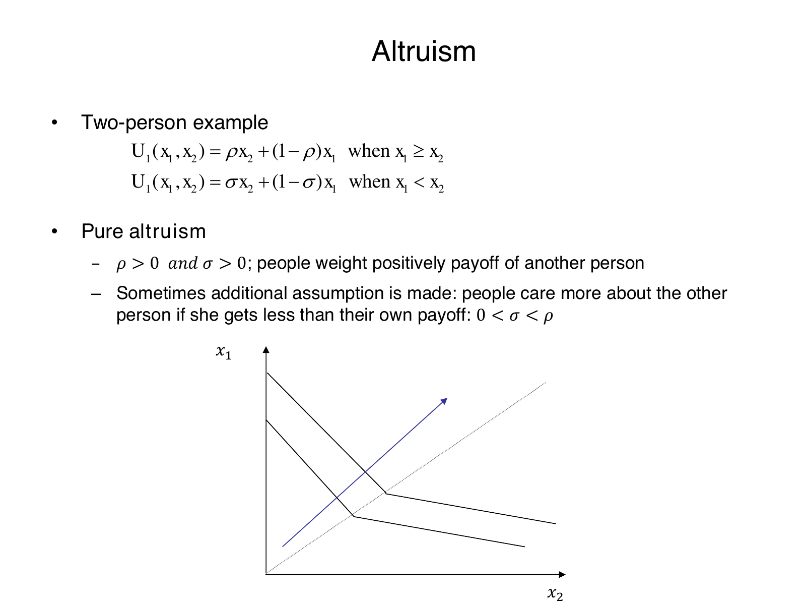
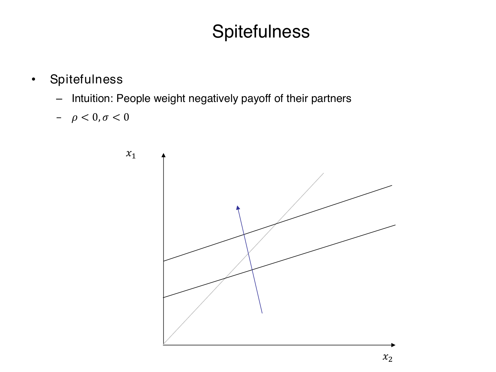
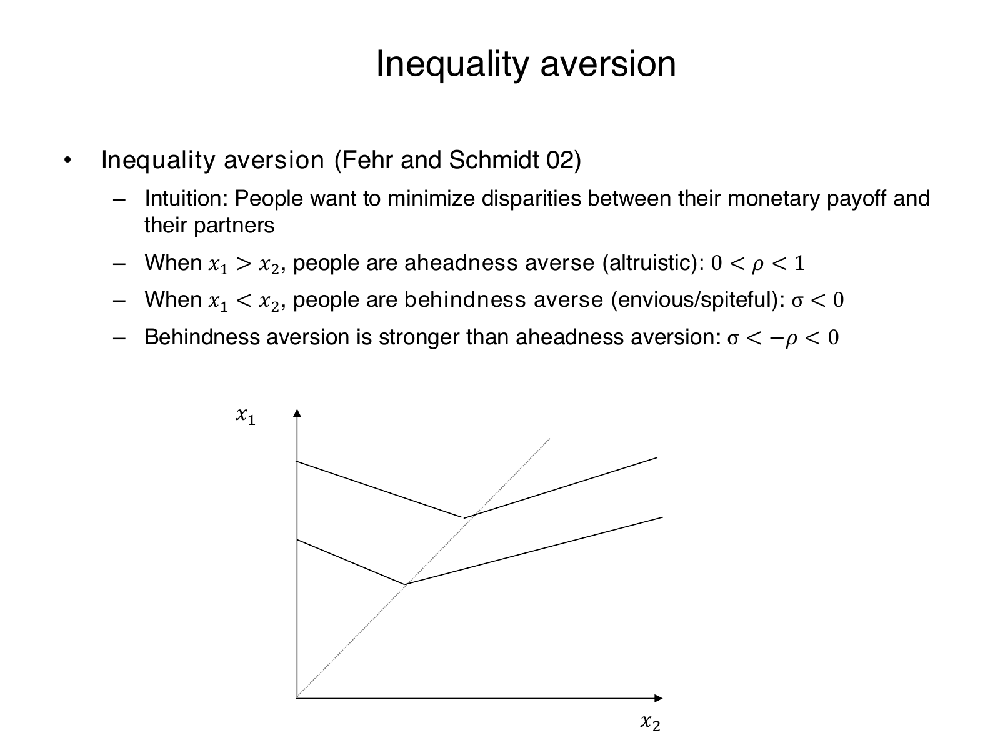

Calculate piecewise utility and interpret payoff preferences
Explanation, worked examples and practice
Useful first: Solve and interpret ultimatum and dictator allocations
Outcome and conditions
Given the displayed two-person function and parameter values, calculate and interpret utility across monetary-payoff regimes and derive what the source curves mean.
Study conditions, assessment scope and sources
- R1: Use the monetary regime condition correctly, calculate both regimes and equality, rewrite the disparity penalties.
- R2: Derive indifference slope with \(x_1\) vertical/\(x_2\) horizontal; explain \(w=0, 0<w<1, w<0, w=1\) and \(w>1\) boundaries.
- R3: Distinguish selfish, altruistic, spiteful and inequality-averse parameter signs, including \(\sigma <-\rho\) for the taught inequality case.
- R4: Interpret stronger behindness penalty and compare equal/unequal allocations without asserting that all equality dominates; do not estimate parameters from aggregate behavior.
Finished-note locations:
- A piecewise utility function for two people
- How to read the indifference curves
- Selfishness, altruism and spitefulness
- Inequality aversion changes sign across equality
Use P002/V002/ingest 3 and O003-C1, objective revision 2. Supported instruction can use this block and linked notes. Independent acquisition and delayed attempts are closed note, with blank paper and pen only; no calculator, device, AI, hint or key exposure. Present only the question before the learner responds; keys remain teacher-side. Unknown help/access is unscorable for independence. Hypothetical inputs instantiate supported mechanisms and are not empirical findings.
Prerequisites and checks
Check the prerequisites
- O002: Correctly mapping own/other allocation payoffs and the monetary benchmark gives the comparison for broader utility. Repair route: Explanation steps
O003-P1 v1, O002 payoff-accounting prerequisite: “A receiver accepts 12 from a 90-unit pie. For the receiver as person1, label \(x_1\) and \(x_2\); does a monetary maximizer value \(x_2\) directly?” Key \(x_1=12,x_2=78\); no, monetary-only utility is own12. Pass all labels and monetary preference; partial arithmetic slip with correct roles; fail swapped roles/other-money maximization. Repair O002 Explanation steps1–3, then O003 Worked example. O003-P2 v1 algebra check: “Solve \(0.2b+0.8a=16\) for a in terms of b.” Key \(a=20-b/4\); slope \(-1/4\). Pass both; partial one arithmetic slip; fail missing own coefficient. Repair Explanation steps3 and supported task. Current qualifying O002 evidence can waive P1 only; arithmetic check can be omitted once an actual response demonstrates this algebra. Neither diagnostic counts as acquisition.
Entry checks have item version v1, and pass/partial/fail plus repair routes above. Their exact limited outcomes do not certify the upstream objective. A waiver requires actual committed compatible evidence, never familiarity or assumed mastery. If a diagnostic fails, use its named prepared explanation and support before continuing; do not cycle through full upstream independent items just to diagnose.
Motivation, intuition, and definitions
Own and other payoffs use identical monetary units; \(\rho\) and \(\sigma\) are dimensionless. The active weight is selected by monetary inequality. A preference can value another person’s income positively when ahead and negatively when behind, so one unqualified “unselfish” label loses predictive detail.
Visual support:
- Social Preferences p15 Selfish Indifference — inspected qualitative/source support; retrieve the finished note’s adjacent explanation.
- Social Preferences p17 Altruism Indifference — inspected qualitative/source support; retrieve the finished note’s adjacent explanation.
- Social Preferences p19 Spite Indifference — inspected qualitative/source support; retrieve the finished note’s adjacent explanation.
- Social Preferences p21 Inequality Indifference — inspected qualitative/source support; retrieve the finished note’s adjacent explanation.
Explanation steps
- Select \(w=\rho\) for \(x_1\ge x_2\), otherwise \(w=\sigma\). Then \(U_1=wx_2+(1-w)x_1=x_1+w(x_2-x_1)\). Equality yields \(U_1(x,x)=x\) from either expression, so the pieces meet.
- With \(0<\rho<1\) and \(\sigma<-\rho<0\), ahead utility is \(x_1-\rho(x_1-x_2)\) and behind utility \(x_1-(-\sigma)(x_2-x_1)\). The disparity amounts are nonnegative in their own regimes; both are penalties. Since \(-\sigma>\rho\), the behindness penalty per unit is larger. This does not remove the value of own income.
- Fix utility \(k\): \(wx_2+(1-w)x_1=k\). For \(w\ne1\), \(x_1=(k-wx_2)/(1-w)\), so with vertical \(x_1\) and horizontal \(x_2\) the slope is \(-w/(1-w)\). At zero weight it is horizontal; at \(0<w<1\) downward; at negative weight upward. At \(w=1\) only \(x_2\) matters and the curve is vertical. At \(w>1\) the own coefficient is negative and the usual positive-own-weight interpretation fails; algebra gives an upward slope. A positive weight alone does not imply the plotted downward shape.
- Selfishness: both weights 0. Altruism: both positive, sometimes \(0<\sigma<\rho\), with no universal upper bound imposed by the lecture’s general definition. Spite: both negative. Inequality aversion: ahead positive/behind negative with the taught stronger-penalty condition. Source figures are qualitative, not estimates.
- To decide between allocations calculate utilities; an unequal high-payoff pair may outrank a low equal pair. Costly UG rejection can be consistent with a sufficiently strong behindness penalty, but aggregate rejection does not identify each individual’s parameters.
Read the full explanation
Reading context
Deliver these complete reused passages before the worked example; earlier concise prompts are checkpoints, not substitutes. Necessary prerequisites use the complete prepared lessons specified above.
Source passage
Origin: reused complete checked passage A piecewise utility function for two people; fingerprint a396884c8a7d4f0e18bd39c4f58b861609e05785148d4187d07a3da9db9c548c. Heading depth alone is adapted.
A piecewise utility function for two people
Let \(x_1\) be person 1's monetary payoff and \(x_2\) person 2's payoff, measured in the same monetary units. \(U_1\) describes person 1's preferences over the pair. The lecture presents the following example under the heading Charness and Rabin (2002):
The dimensionless parameter \(\rho\) weights the other person's payoff when person 1 is at least as well off; \(\sigma\) applies when person 1 is behind. The coefficient on one's own payoff is correspondingly \(1-\rho\) or \(1-\sigma\). The conditions refer to monetary payoffs, not to a comparison of the two people's utilities. The lecture supplies this simplified example; it is not a reproduction of the full cited paper. Social Preferences, physical PDF pp. 14–18, 20
Algebraic unpacking: when \(x_1\ge x_2\), write utility as \(x_1-\rho(x_1-x_2)\); when \(x_1<x_2\), write it as \(x_1+\sigma(x_2-x_1)\). At equality both expressions give \(U_1(x,x)=x\), so the pieces meet. Their slopes can differ at the equality line. Changing \(\rho\) or \(\sigma\) changes how person 1 trades off own income against the other person's outcome. Social Preferences, physical PDF pp. 14, 20–21
Source passage
Origin: reused complete checked passage How to read the indifference curves; fingerprint a396884c8a7d4f0e18bd39c4f58b861609e05785148d4187d07a3da9db9c548c. Heading depth alone is adapted.
How to read the indifference curves
An indifference curve joins payoff pairs giving the same utility to person 1. In the source figures the vertical axis is \(x_1\) and the horizontal axis is \(x_2\). The gray diagonal marks equal monetary payoffs. Do not reverse the axes when interpreting the curve's slope. Social Preferences, physical PDF pp. 15, 17, 19, 21
Within either regime, let \(w\) stand for its active weight, \(\rho\) or \(\sigma\), and fix utility at \(k\). Derived from the displayed function, for \(w\ne1\),
With \(w=0\) the curve is horizontal. With \(0<w<1\) it slopes downward: more income for person 2 can compensate for less own income. With \(w<0\) it slopes upward: when the other person's gain lowers utility, own income must rise to compensate. These slope descriptions use the source figures' positive own-payoff coefficient. The lecture's general positive-weight statement does not itself impose an upper bound on every altruistic weight; if \(w=1\), own payoff drops out and the curve is vertical, while \(w>1\) changes the own-payoff sign. These boundary cases are algebraic qualifications, not additional empirical claims. Social Preferences, physical PDF pp. 14–19
Source passage
Origin: reused complete checked passage Selfishness, altruism and spitefulness; fingerprint a396884c8a7d4f0e18bd39c4f58b861609e05785148d4187d07a3da9db9c548c. Heading depth alone is adapted.
Selfishness, altruism and spitefulness
Selfish preferences
Setting \(\rho=\sigma=0\) gives \(U_1=x_1\). The other person's monetary payoff has no direct effect on person 1's utility. This is the benchmark used to solve the anonymous games by monetary incentives alone. A horizontal indifference curve means that any \(x_2\) is equally attractive when \(x_1\) is unchanged; the upward arrow in the source shows preference for more own income. Social Preferences, physical PDF p. 15

Source slide 15: own payoff is vertical, the other person's payoff horizontal. With both social weights zero, the horizontal curves preserve own payoff, and higher curves are preferred. Social Preferences, physical PDF p. 15
Altruism
The lecture calls \(\rho>0\) and \(\sigma>0\) pure altruism: the other person's payoff enters utility positively whether person 1 is ahead or behind. It sometimes adds \(0<\sigma<\rho\), meaning greater weight on the other person when that person has less than one's own payoff. In that case, the weight changes at equality even though both weights remain positive. Do not confuse the larger ahead-regime weight with a negative behind-regime weight. Social Preferences, physical PDF pp. 16–17

Source slide 17: downward-sloping segments show willingness to trade own income against the other person's income in the plotted positive-own-weight case. A change of slope at the equality diagonal represents different weights across the two regimes. The figure supplies no numerical parameter estimate. Social Preferences, physical PDF p. 17
Spitefulness
For spiteful preferences, \(\rho<0\) and \(\sigma<0\). Increasing the other person's payoff while holding one's own fixed lowers utility in either regime. This is different from being selfish: a selfish person is indifferent to that change, while a spiteful person dislikes it. The own-payoff coefficient is then greater than one, and the indifference segments slope upward. Social Preferences, physical PDF pp. 18–19

Source slide 19: upward-sloping curves show that a higher other-person payoff requires extra own income to maintain utility. The preference arrow points toward more own income and less income for the other person; the gray equality line locates the payoff regimes. Social Preferences, physical PDF p. 19
Source passage
Origin: reused complete checked passage Inequality aversion changes sign across equality; fingerprint a396884c8a7d4f0e18bd39c4f58b861609e05785148d4187d07a3da9db9c548c. Heading depth alone is adapted.
Inequality aversion changes sign across equality
Inequality aversion dislikes disparities between own and another person's monetary payoff. The lecture labels its discussion Fehr and Schmidt (02) and specifies
When person 1 is ahead, the positive \(\rho\) means that increasing the poorer person's payoff at fixed own income reduces the disparity and raises utility. When person 1 is behind, the negative \(\sigma\) means that increasing the richer person's payoff at fixed own income widens the disparity and lowers utility. The last inequality says \(-\sigma>\rho\): the disadvantageous-inequality penalty is stronger than the advantageous-inequality penalty. Social Preferences, physical PDF pp. 20–21
The rewritten function makes the penalties explicit:
This is derived from the source's function, not an extra estimated model. The first penalty subtracts a fraction of the amount by which person 1 is ahead; the second subtracts a positive weight times the amount by which person 1 is behind. The model still values own income. It does not imply that any equal allocation is always preferred to every unequal allocation regardless of the amount of money involved. Social Preferences, physical PDF pp. 14, 20–21

Source slide 21: each curve slopes down in the ahead region above the equality diagonal, then up in the behind region below it. The kink reflects a change from positive to negative weight on the other person's payoff. Higher-own-payoff curves represent higher utility; the picture is qualitative, not an estimate of the two penalty parameters. Social Preferences, physical PDF p. 21
This distinction helps interpret ultimatum rejection: a receiver may prefer both players receiving zero to accepting a strongly disadvantageous positive split if the inequality penalty is sufficiently large. The relevant comparison is utility, not only money. Whether rejection occurs depends on the person's parameters and offered allocation; the lecture's aggregate rejection rates do not identify those parameters for each individual. Social Preferences, physical PDF pp. 3, 8, 20–21
Worked example
O003-W1 — Two regimes and curves
Item version: v1. Role: worked instruction.
Setup: Hypothetical \(\rho =1/4,\sigma =-1/2\). Calculate \(U\) at \((80,40),(30,90),(40,40)\), slopes, and compare \((80,40)\) with equal \((40,40)\).
Worked reasoning and result: Ahead:\(80-(1/4)40=70\). Behind:\(30-(1/2)60=0\). Equal \(40\). Slopes ahead \(-(1/4)/(3/4)=-1/3\); behind \((1/2)/(3/2)=1/3\). Both penalties subtract disparities; behind rate \(1/2\) exceeds \(1/4\). Unequal utility \(70\) exceeds equal \(40\). At \(w=0\) horizontal,\(w=1\) vertical,\(w>1\) own coefficient negative; only \(0<w<1\) slopes down. Selfish \(\rho=\sigma=0\), altruistic both positive, spite both negative, taught inequality \(\rho\in(0,1)\),\(\sigma<-\rho\). No parameters estimated.
Checks and interpretation: Verify labels, active conditions, dimensions/signs where applicable and every source limitation before inferring a choice. This example is exposed instruction and cannot establish independence.
Practice with fading assistance
Write your reasoning, then reveal the complete key to check each step.
A local draft for your own study.
Reveal explanation
Key: Ahead \(70-(1/5)50=60\); behind \(20-(2/5)50=0\); equal \(40\). \(\text{Slopes}=-1/4\) and \(2/7\) from \(-w/(1-w)\), with \(x_1\) vertical. \(w=0\) horizontal,\(0<w<1\) downward,\(w<0\) upward,\(w=1\) vertical,\(w>1\) own coefficient negative and upward. Signs selfish \(\rho=\sigma=0\), altruism \(\rho>0,\sigma>0\) (no universal \(<1\) restriction), spite \(\rho<0,\sigma<0\), inequality \(0<\rho<1\)/\(\sigma<-\rho\). Behind penalty \(.4>.2\); \(\text{unequal }60>\text{equal }40\) shows equality not always preferred. Qualitative figures/aggregate behavior do not estimate weights.
Support and rubric: Begin by letting the learner complete the specified steps using blank paper. Linked notes and up to two prepared hints are allowed here. Pass requires the essential component list with correct reasoning; partial means an incomplete component or isolated arithmetic slip, prompting the named repair; fail means a critical conceptual error. A correct supported answer permits fading help, never a claim of independent acquisition. After two ineffective hints show the needed step or pause.
A local draft for your own study.
Reveal explanation
Key: Ahead \(100-(1/4)60=85\); behind \(40-(3/4)60=-5\); equality \(50\). Slopes ahead \(-1/3\),behind \(3/7\) via \(x_1=(k-wx_2)/(1-w)\), axes \(x_1\) vertical,\(x_2\) horizontal. \(w=0\) horizontal,\(0<w<1\) downward,\(w<0\) upward,\(w=1\) vertical,\(w>1\) negative own coefficient/upward. Selfish \(\rho=\sigma=0\), altruism both positive with no universal upper bound, spite both negative, taught inequality \(0<\rho <1\) and \(\sigma <-\rho\). Behind penalty \(.75>.25\); \(\text{unequal }85>\text{equal }50\), so equality not always preferred. Aggregate rejection and qualitative curves cannot estimate these individual parameters.
Item rubric: All listed required components must be supplied, with correct reasoning and limits; apply the component decision rules in Rubric and independence. Conceptually equivalent explanations and exact fractions/consistent decimals are acceptable. No assistance, notes, calculator, device, AI or key access for an independent/delayed attempt; blank paper and pen only. C1 is a supported repair after scoring the original response and does not count toward acquisition or delayed retention.
A local draft for your own study.
Reveal explanation
Key: Ahead \(90-(2/5)60=66\); behind \(30-(3/5)60=-6\); equal \(40\). Slopes \(-2/3,3/8\) derived \(-w/(1-w)\), \(x_1\) vertical/\(x_2\) horizontal. \(w=0\) horizontal,\(0<w<1\) down,\(w<0\) up,\(w=1\) vertical,\(w>1\) own sign negative and up. Selfish \(\rho=\sigma=0\), altruism positive both (not automatically \(<1\)), spite negative both, inequality \(\rho\in(0,1)\),\(\sigma <-\rho\). Behind \(.6>.4\). \(\text{Unequal }66>\text{equal }40\); equal allocations do not dominate universally. No individual parameter identification from aggregate choices/qualitative source curves.
Item rubric: All listed required components must be supplied, with correct reasoning and limits; apply the component decision rules in Rubric and independence. Conceptually equivalent explanations and exact fractions/consistent decimals are acceptable. No assistance, notes, calculator, device, AI or key access for an independent/delayed attempt; blank paper and pen only. C1 is a supported repair after scoring the original response and does not count toward acquisition or delayed retention.
Rubric and independence
Self-assessment criteria and tutor checks
- R1: Use the monetary regime condition correctly, calculate both regimes and equality, rewrite the disparity penalties.
- R2: Derive indifference slope with \(x_1\) vertical/\(x_2\) horizontal; explain \(w=0, 0<w<1, w<0, w=1\) and \(w>1\) boundaries.
- R3: Distinguish selfish, altruistic, spiteful and inequality-averse parameter signs, including \(\sigma <-\rho\) for the taught inequality case.
- R4: Interpret stronger behindness penalty and compare equal/unequal allocations without asserting that all equality dominates; do not estimate parameters from aggregate behavior.
Every I1, I2, D1, D2 and C1 question/key explicitly addresses all required components above. The sole acquisition route is two separate, distinct, fresh unassisted passes on I1 and I2 under the current criterion and compatible tuple. Worked/support/diagnostic/correction items and delayed items are not acquisition substitutes. No shorter question silently fills a missing component. The fixed practice inputs differ across W1/S1/I1/I2/D1/D2/C1; learning constants from the notes remain common where retrieval of those exact facts is the outcome.
Pass: all essential components, necessary reasoning, assumptions and interpretation limits are present, with accurate outputs. Accept equivalent wording, correct alternative algebra and exact fractions or consistent rounding that preserves inequalities/ties. Partial: a missing component or isolated arithmetic/transcription slip with valid conceptual setup; score before explaining the repair and do not count this attempt as a pass. Fail: wrong regime/role/sign, invalid incentive logic, replacing utility with monetary sum, treating hypothetical or descriptive data as identified results, or dropping a stated condition that changes the conclusion. For the orientation objective, replacing a printed restriction with an invented rule is a critical error. Unscorable: ambiguous prompt interpretation outside the key, unknown assistance/access/exposure, or unavailable source tuple. No numeric point scale or mastery result is fabricated.
An independent check is fresh only if neither its question nor key has already been exposed, including during earlier diagnostics or feedback. Teach records actual help/access conditions. Correct repetition of an exposed task cannot establish fresh independence. I1 and I2 are reserved for acquisition; D1/D2 are reserved for delayed retrieval.
Misconceptions and correction
Signs: applying \(\rho\) when behind, reversing axes, saying all positive weights slope down or all equal allocations win. Correction: select monetary regime before substituting; retain the \((1-w)\) own coefficient; compare utilities of both pairs. Hint1: which monetary payoff is larger? Hint2: solve fixed-\(U\) equation for vertical \(x_1\). C1 is fresh repair only.
A sign is a tentative hypothesis about the error until the learner’s reasoning supports it. Score the initial response before giving the corrective explanation or either hint. At most two ineffective hints, then show the specific prepared step or pause. After two unsuccessful full independent attempts, stop quizzing and use support/prerequisite repair; request new full variants from plan if needed.
O003-C1 — fresh correction only
Item version: v1. Role: correction_repair. Relation: parallel_variant. Required components: R1, R2, R3, R4.
Question: Repair hypothetical \(\rho =1/10,\sigma =-3/10\). Compute \(U\) and disparity penalties for \((110,50),(50,110),(60,60)\); derive slopes with correct axes and all boundary cases. Classify the four preference types, interpret penalty asymmetry, compare unequal \((110,50)\) to equal \((60,60)\) and state identification limits.
Key: Ahead \(110-.1(60)=104\); behind \(50-.3(60)=32\); equal \(60\). Slopes \(-1/9\) and \(3/13\) via \(-w/(1-w)\), own vertical/other horizontal. \(w=0\) horizontal,\(0<w<1\) down,\(w<0\) up,\(w=1\) vertical,\(w>1\) negative own coefficient/up. Selfish \(\rho=\sigma=0\), altruism \(\rho>0,\sigma>0\) no universal \(<1\), spite \(\rho<0,\sigma<0\), inequality \(0<\rho <1,\sigma <-\rho\). Behind \(.3>.1\); \(\text{unequal }104>\text{equal }60\). No individual parameter estimates from aggregate choices or qualitative figures.
Item rubric: All listed required components must be supplied, with correct reasoning and limits; apply the component decision rules in Rubric and independence. Conceptually equivalent explanations and exact fractions/consistent decimals are acceptable. No assistance, notes, calculator, device, AI or key access for an independent/delayed attempt; blank paper and pen only. C1 is a supported repair after scoring the original response and does not count toward acquisition or delayed retention.
Immediate and delayed checks
I1 and I2 are prepared above for immediate acquisition. Present each question without its key. Delayed checks below must occur at least 24 actual hours after both qualifying acquisition and the most recent relevant teaching/feedback/known solution exposure: measure from the later of those anchors. They occur before recap and without help. A next calendar day alone does not establish 24 hours. Record known intervening exposure; unknown timing/exposure does not certify delayed retention. This interval is a practical validity guard, not a personalized optimum. A delayed pass requires all current essential components. D1 and D2 are alternatives for separate fresh delayed attempts; use the first unused one, never both merely to fill acquisition. Passing a number-changed parallel variant supports bounded retrieval and application, not broad transfer or every semester topic.
A local draft for your own study.
Reveal explanation
Key: Ahead \(120-.2(100)=100\); behind \(20-.5(100)=-30\); equal \(60\). Slopes \(-1/4\) and \(1/3\), axes own vertical/other horizontal, from \(-w/(1-w)\). \(w=0\) horizontal; positive below \(1\) down; negative up; \(w=1\) vertical; above \(1\) own coefficient negative/up. Selfish \(\rho=\sigma=0\), altruism \(\rho>0,\sigma>0\) without universal\(<1\), spite \(\rho<0,\sigma<0\), inequality \(0<\rho <1,\sigma <-\rho\). Behind \(.5>.2\). \(\text{Unequal }100>\text{equal }60\), no universal equality dominance; neither aggregate rejection nor qualitative curves estimates these parameters.
Item rubric: All listed required components must be supplied, with correct reasoning and limits; apply the component decision rules in Rubric and independence. Conceptually equivalent explanations and exact fractions/consistent decimals are acceptable. No assistance, notes, calculator, device, AI or key access for an independent/delayed attempt; blank paper and pen only. C1 is a supported repair after scoring the original response and does not count toward acquisition or delayed retention.
A local draft for your own study.
Reveal explanation
Key: Ahead \(80-.3(50)=65\); behind \(30-.7(50)=-5\); equal \(45\). Slopes \(-3/7\) and \(7/17\) derived with \(x_1\) vertical,\(x_2\) horizontal. Zero horizontal,positive below \(1\) downward,negative upward,\(1\) vertical,above \(1\) own coefficient negative/upward. Selfish \(\rho=\sigma=0\); altruism both positive no general upper bound; spite both negative; taught inequality \(0<\rho <1,\sigma <-\rho\). Behind \(.7>.3\). \(\text{Unequal }65>\text{equal }45\). These are hypothetical parameters; curves/aggregate choices do not estimate them.
Item rubric: All listed required components must be supplied, with correct reasoning and limits; apply the component decision rules in Rubric and independence. Conceptually equivalent explanations and exact fractions/consistent decimals are acceptable. No assistance, notes, calculator, device, AI or key access for an independent/delayed attempt; blank paper and pen only. C1 is a supported repair after scoring the original response and does not count toward acquisition or delayed retention.
Content provenance and generation boundaries
Sources and scope
Complete checked-note passages above are reused with only heading-depth and explicit mathematical typography adaptation; exact origin/fingerprint and asset dependencies are in source_manifest.md. All earlier plan-created exercises/full keys and named evidence routes remain intact. Hypothetical arithmetic instantiates the included definitions and does not introduce empirical results or new academic claims. Only named prepared full-capability forms and their existing permitted pairs can certify acquisition/delayed evidence. Extra checked explanation/practice cannot replace a named full form or reassessment gate. Equivalent verified methods may meet the unchanged pre-answer criterion; ambiguous criteria or an exhausted fresh bank return to plan. The current objective revision is 2; item/criterion versions remain as explicitly stated above.